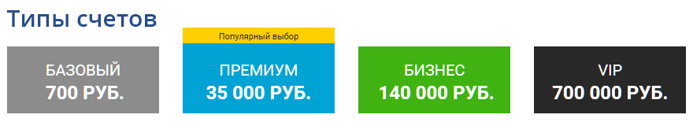
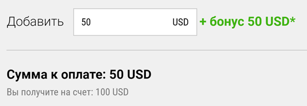

Меню
Меню Брокеры
Брокеры Стратегии
СтратегииБинариум
 |
|
| Мин. депозит: 9$ | Активы брокера: 130+ |
| Мин. ставка: 1$ | Валюта счета: USD, EUR, RUB |
| Прибыльность: До 85% | Демо счет: Есть |
| Бонус: 30% на депозит + страховка | |
| Пополенение счета: Карты VISA и MasterCard, Webmoney, Skrill, Qiwi, Яндекс.Деньги | |
| Вывод со счета: Карты VISA и MasterCard, Webmoney, Skrill, Qiwi, Яндекс.Деньги | |
Компания Binarium работает на рынке с 2012 года, предоставляя клиентам отличный сервис для торговли бинарными опционами. Эта брокерская фирма работает на ведущей мировой платформе в сфере работы с бинарными опционами SpotOption.
Достоинства брокера Бинариум
Данная платформа дает возможность инвесторам проводить операции с опционами 60 секунд, бинарными опционами, опционами One Touch и конструкторами опционов. Здесь предлагают прекрасные условия для работы с этими финансовыми инструментами:
- минимальний опцион на 1$;
- возможность пополнения счета через кредитные и дебетовые карты, Qiwi, Skrill, Webmoney, Cбербанк онлайн, СМС, Neteller, Яндекс.Деньги, China Unionpay и др.;
- оперативный вывод заработанных средств без комиссий через удобные клиентам инструменты;
- быструю выплату прибыли до 85%;
- открытие депозитных счетов с разными валютами (рубли, евро или доллары);
- более 120 видов активов для проведения торговли с опционами;

Особенности Бинариум – официальный сайт
Эта фирма предлагает самую свежую высококачественную аналитическую информацию и статистические данные в режиме онлайн. На сайте есть возможность бесплатного обучения приемам и схемам работы с бинарными опционами. Здесь можно воспользоваться и рядом других удобных бесплатных услуг:
- проведение операций с личным профессиональным аналитиком;
- торговая комната;
- включение торговых сигналов;
- сервис онлайн поддержки торговых инструментов;
Брокерская компания Binarium входит в число самых надежных на рынке обслуживания бинарных опционов. Она имеет соответствующую лицензию российского ЦРОФР.
Оригинальные бонусные программы от Бинариум
Фирма предлагает отличные бонусы своим клиентом. Вся прибыль, полученная с бонусов, может быть свободно выведена из системы, а сам бонус имеет всего лишь х20 плечо (у большинства брокеров этот показатель в 2 раза выше). Компания регулярно проводит разнообразные акции, предлагая клиентам выгодные условия сотрудничества.
К примеру, здесь можно сделать десятикратный оборот средств на счету и забрать всю прибыль себе. Клиенты могут застраховать свои первые 3 сделки, совершаемые на платформе этого брокера. Компания Binarium берет на себя все риски, которые связаны с проведением таких первоначальных операций.
При первых депозитах Вы можете получить приветственный бонус до 100%.

Пользуясь услугами такой надежной профессиональной брокерской компании, трейдеры имеют отличные условия для комфортной работы и получения хороших доходов, торгуя различными видами бинарных опционов.